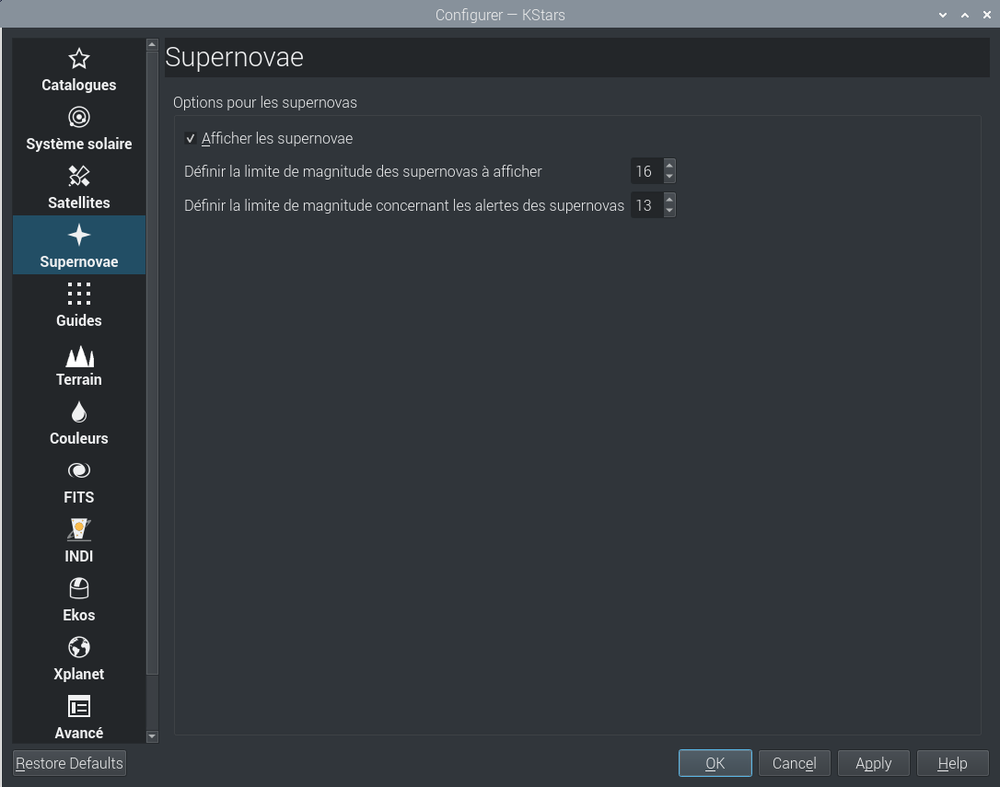

La page Supernovae vous permet de choisir si les supernovae sont affichées ou non en cochant la case Afficher supernovae. Par défaut les supernovae sont dessinées comme de petit “+” de couleur orange clair. Comme pour les satellites, la couleur des supernovae peut facilement être modifiée sur la page des Couleurs.
Vous pouvez régler la magnitude limite d'affichage des supernovae ainsi que la magnitude limite pour les alertes. La magnitude limite est la plus faible magnitude d'un objet du ciel visible à l'œil nu ou avec un télescope.
La liste des supernovae récentes peut être mise à jour dans le menu → .